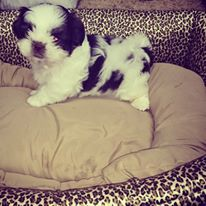
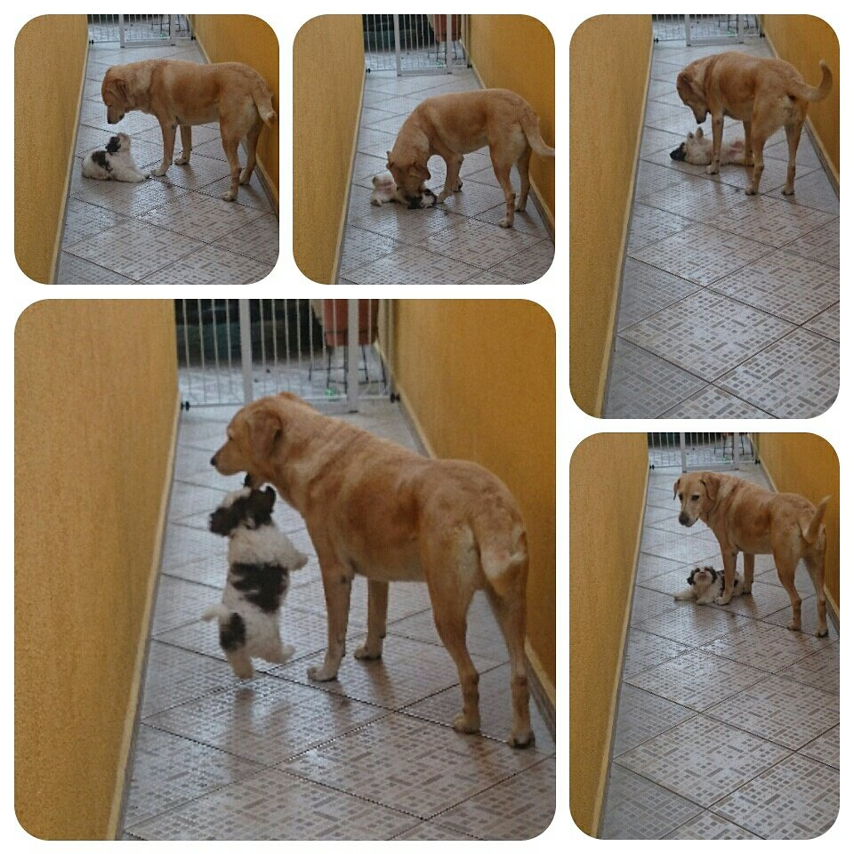

Minha Historia

Nasci em 15/08/14 em um Canil em sp, mais certo na ZL de SP.
Minha mamãe foi me conhecer exatamente no dia em que eu nasci, era bem branquinho, e com um pontinho marrom entre os pelos brancos.
Depois de mais ou menos 20 dias, mamãe voltou para me ver,e sim, neste dia ela teve a certeza que iria me levar para casa, era só aguardar mais 25 dias.
Passado os 45 dias fui para meu novo lar, e apartir deste dia até hoje só diversão, muito amor e carinho.
Nessa nova casa eu ganhei um amigão,o ESPOKE um jovem labrador incrivel.

Voltar